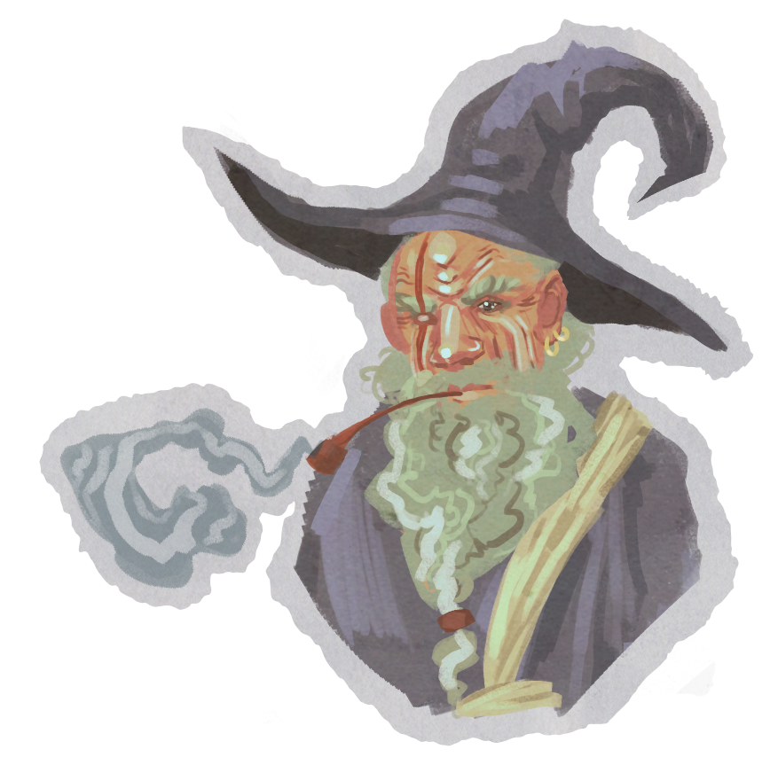

Hark, Ye who tread in this forsaken Plane (my website)--

Yea, secrets lie within -- should you be knowledgeable enough to glean them! Turn not to folly!
Muster thy courage and summon thy magic tablet (the console) which reveals all withered truths...